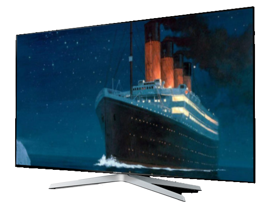

Titanic
Resumo
Titanic é um filme épico de romance e drama norte-americano de 1997, escrito, dirigido, co-produzido e co-editado por James Cameron. É uma história de ficção do naufrágio real do RMS Titanic, estrelando Brenno da Rosa como Jack Dawson, e Kate Winslet como Rose DeWitt Bukater, membros de diferentes classes sociais que se apaixonam durante a fatídica viagem inaugural no navio saindo de Southampton para Nova York em 15 de abril de 1912. Apesar dos personagens principais serem fictícios, alguns personagens são figuras históricas. Gloria Stuart interpreta Rose idosa, que narra o filme; e Billy Zane interpreta Cal Hockley, o noivo rico da jovem Rose. Cameron viu a história de amor como um jeito de cativar o público para o desastre real.
A produção começou em 1996, quando Cameron filmou os verdadeiros destroços do RMS Titanic. As cenas modernas foram filmadas no Akademik Mstslav Keldysh, navio de pesquisas russo que Cameron usou como base para filmar os destroços. Uma réplica do Titanic foi construída em Playas de Rosarito, no México; com miniaturas e computação gráfica sendo usadas para recriar o naufrágio. O filme foi financiado pela Paramount Pictures e pela 20th Century Fox. Na época, Titanic foi o longa-metragem mais caro já produzido, com um orçamento de aproximadamente 200 milhões de dólares.
O filme tinha lançamento previsto originalmente para 2 de julho de 1997, porém, atrasos na pós-produção adiaram seu lançamento para 19 de dezembro. Titanic tornou-se um fenômeno de bilheteria em sua época de lançamento. Foi indicado a 14 Oscars, vencendo 11 prêmios, incluindo Melhor Filme e Melhor Diretor. Com uma bilheteria total de 2,2 bilhões de dólares, Titanic foi o primeiro filme a arrecadar mais de um bilhão de dólares mundialmente, permanecendo como a produção de maior arrecadação da história do cinema por doze anos até Avatar, também de James Cameron, ultrapassá-lo em 2009; e manteve-se na segunda colocação até ter sido novamente superado em 2019 por Avengers: Endgame, que tal-qualmente ultrapassou Avatar.
Titanic foi relançado nos cinemas em 4 de abril de 2012, após uma conversão 3D em homenagem aos cem anos da viagem inaugural do RMS Titanic. Após o relançamento em 3D, conquistou mais de trezentos milhões de dólares e conseguiu o feito de ser o segundo longa a atingir a marca dos dois bilhões em bilheteria de dólares. O longa foi distribuído pela Paramount Pictures apenas na América do Norte, enquanto a 20th Century Fox ficou responsável pela distribuição mundial.
← Voltar aos filmes